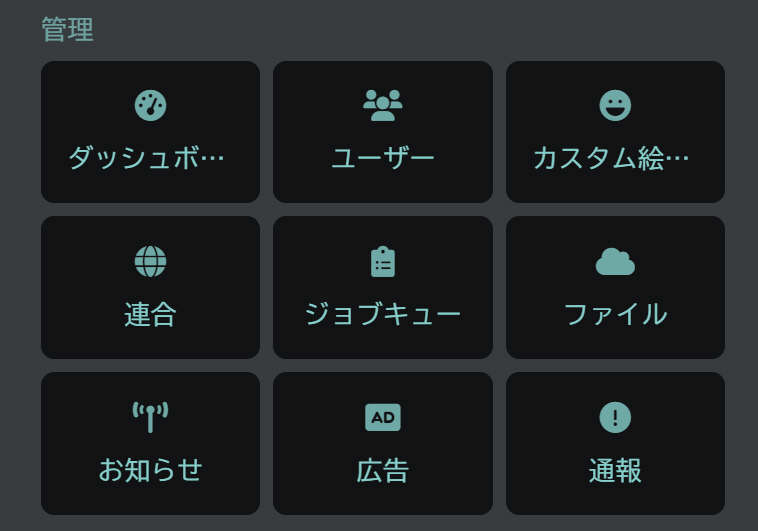
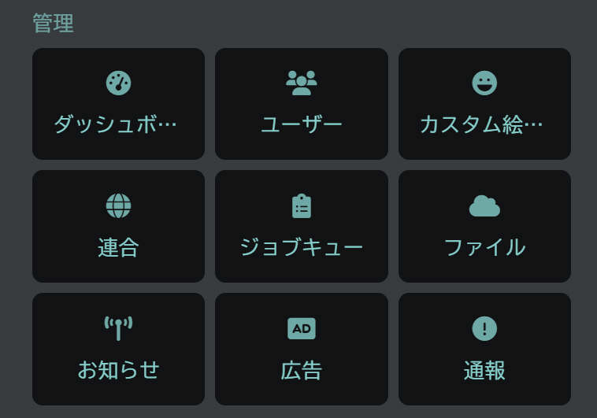
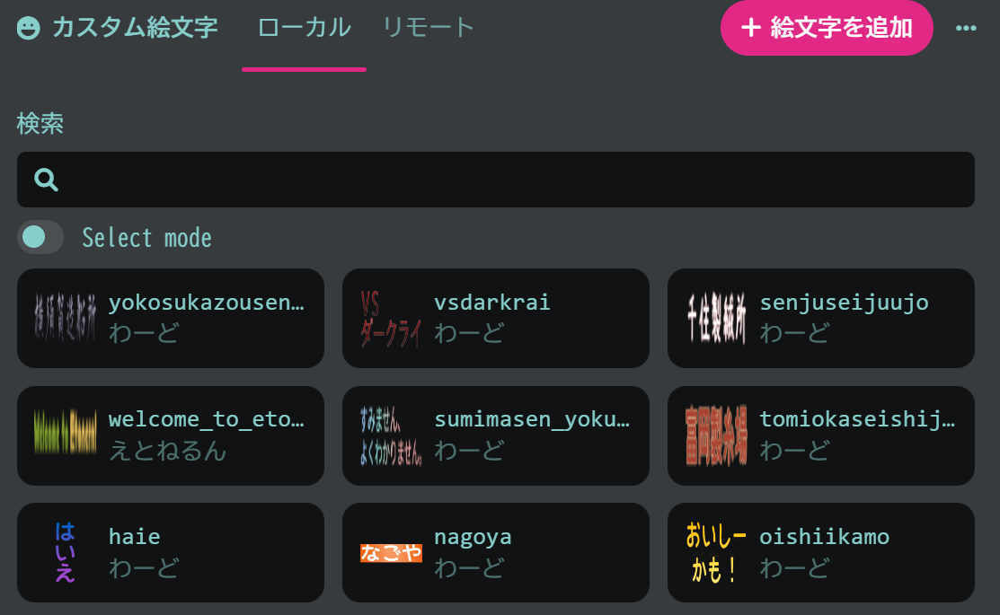
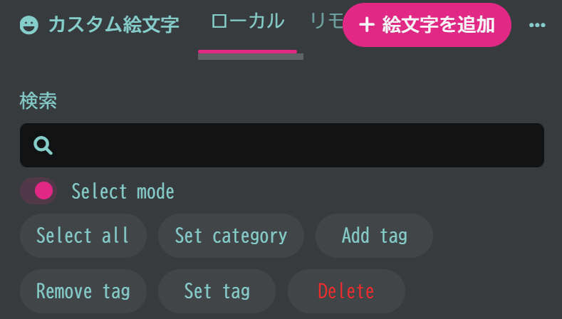
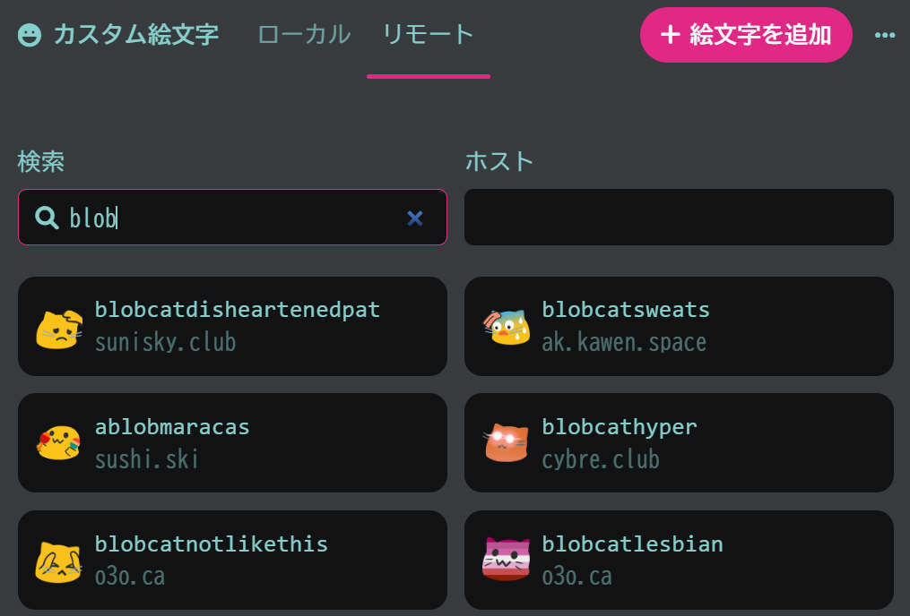
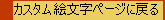

カスタム絵文字の登録方法 著:西村透(@woxin_chang_dan1904_)
一部掲載と同時に編集がされています。
こちらの記事は下記ページと同じ内容です。
https://msk.ilnk.info/@woxin_chang_dan1904_/pages/1661517969078
こんにちは。この投稿を見ているということは、初めてモデレーター権限を取得して絵文字を登録できるようになったけれどもやり方がわからないという人もいるでしょう。
そこで、カスタム絵文字の登録に付いての解説をさせていただきます。
注意点として、筆者はプログラミングの知識が皆無な上、Misskeyについて知らないことが少なくないです。なので、情報が正確でない場合があります。
 

カスタム絵文字の登録の仕方には、自分でアップロードする方法とリモートから取得する方法があります。
まず、コントロールパネル（扉が半開きになっているマーク）を選択し、管理内にあるカスタム絵文字をクリックします。
そうすると、いくつかのカスタム絵文字が有ると思われます。一つ一つ解説します。

まず、検索ですが、カスタム絵文字を検索することができます。
次にカスタム絵文字の管理画面について説明します。カスタム絵文字内には、ローカルとリモートというタブが設定されています。
先にローカルタブについて説明します。その中のカスタム絵文字の設定画面を解説します。

名前：カスタム絵文字を呼び出す英語の名前
カテゴリ：リアクションピッカーやカスタム絵文字一覧で使用され、そのカスタム絵文字が属しているカテゴリ
タグ：投稿フォームでコロンの後ろに入力したときに呼び出せる名前
これらを設定し、右上のチェックマークをクリックすることで、カスタム絵文字の設定ができます。

ローカルタブ内には、Select
modeというボタンがあります。これを押すと、複数のカスタム絵文字を選択できるようになっています。
Select all：すべてのカスタム絵文字を選択する
Set category：選択したカスタム絵文字にカテゴリを追加する
Add tag：タグを追加する
Remove tag：タグを削除する
Set tag：それまで設定されたタグを消した上でタグを追加する
Delete：カスタム絵文字を削除する
注意点として、あまり大きいファイルサイズのカスタム絵文字はやめましょう。目安として、256×256pixelがいいとされています。

次にリモートタブについて説明します。
リモートタブでは、連合している様々なインスタンスで登録されたカスタム絵文字を、自分のインスタンスに追加できます。
ホストというのは、インスタンスのドメイン名（えとねるんならmsk.ilnk.info）を正確に入力する必要があります。
追加したいカスタム絵文字を選択し、インポートを入力すれば登録できます。
注意点が複数あります。
まず、同じ名前のカスタム絵文字が登録されていることです。同じカスタム絵文字を追加してしまう恐れがあります。
次に、カスタム絵文字を追加して使用された時点で、勝手にリモートに表示されるようになっている点です。
そのため、カスタム絵文字を追加して使用した時点で、他インスタンスにもそのカスタム絵文字が使用されるおそれがあることです。しかし現時点では、これを止める仕組みがありません。
言い換えると、他のインスタンスで使用されたくないカスタム絵文字をインポートしてしまう恐れがあります。
筆者が把握しているところでは、misskey.ioの「Missekey.io
Original」（_misskeyio）やsunisky.club作成の絵文字は使用してほしくないとアナウンスが有りました（2022/08/26時点）。
それらの絵文字をインポートしないように気をつけましょう。
いかがでしたか。もしよろしければ、上記リンクからページに飛んでハートのクリックをよろしくお願いします。
